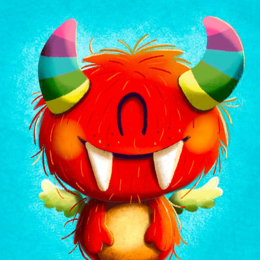
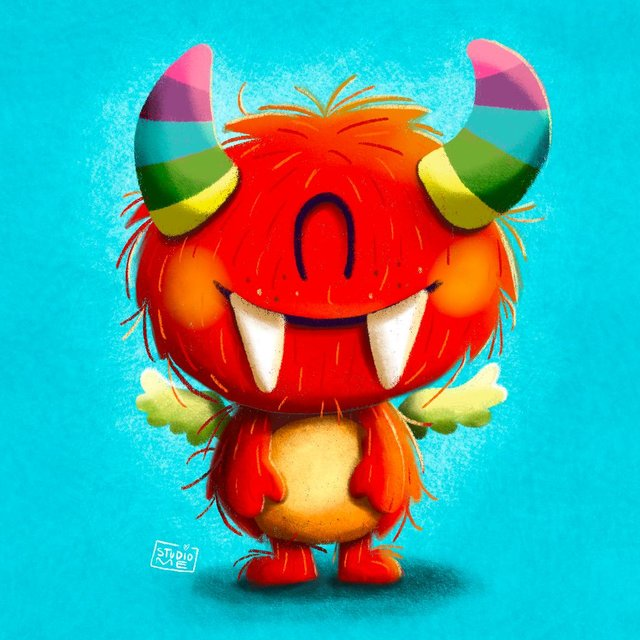

Palabra a Palabra
Woorden laden…
Woorden
Vervoegen
0
te herhalen
0
nieuw
0
onder de knie
Richting
Spaans →
NL
NL
→ Spaans
Onderwerp
Welke tijden oefen je?
Start
Woordenlijst bekijken
Instellingen
Nieuwe woorden per ronde
Spaans automatisch uitspreken
Woorden inspreken
Bij
NL
→ Spaans zeg je het Spaanse woord hardop
Je voortgang wordt alleen op dit toestel bewaard. Iedereen oefent dus op zijn eigen telefoon.
Voortgang wissen
Alle voortgang op dit toestel wissen?
Ja, wissen
Annuleren
✕
0/0
Bedenk het antwoord en tik op de kaart
Nog niet
Wist ik

Ronde klaar
¡Muy bien!
Terug naar start
←
Woordenlijst
✕
0/0
nieuw
Persoon:
á
é
í
ó
ú
ñ
ü
Controleer
Luister
Toch goed rekenen
Volgende
←
Vervoegtabellen